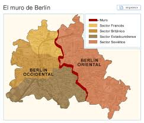

Resumen del Tema
La caída del Muro de Berlín fue un hecho crucial en la historia contemporánea. El muro, símbolo de la Guerra Fría, dividió a Berlín en dos durante casi 30 años. Su derribo marcó el inicio del fin del bloque soviético y la reunificación de Alemania. La "caída de Berlín" puede referirse a dos eventos históricos clave: la Batalla de Berlín durante la Segunda Guerra Mundial en 1945, y la caída del Muro de Berlín en 1989. La primera, la batalla, fue una serie de combates que culminaron con la rendición de Berlín ante el Ejército Rojo soviético, marking el final de la Segunda Guerra Mundial en Europa. La segunda, la caída del muro, fue un evento que marcó el fin de la Guerra Fría y la reunificación de Alemania.
La Batalla de Berlín (1945)
- Fue la última gran batalla en Europa durante la Segunda Guerra Mundial.
- Se libró del 20 de abril al 2 de mayo de 1945.
- El Ejército Rojo soviético avanzó hacia Berlín, buscando tomar la capital del Tercer Reich.
- La batalla resultó en una gran victoria soviética, que llevó a la rendición de la ciudad y la muerte o captura de miles de soldados y civiles alemanes.
- La rendición de Berlín significó la derrota de la Alemania nazi y el fin de la Segunda Guerra Mundial en Europa.
La Caída del Muro de Berlín (1989)
- El 9 de noviembre de 1989, la población de Berlín, tanto en la parte occidental como oriental, derribó el Muro de Berlín, una barrera que había dividido la ciudad durante casi tres décadas.
- La caída del muro fue un símbolo de la desintegración del bloque soviético y el fin de la Guerra Fría.
- La reunificación de Alemania, que se produjo un año después, fue una consecuencia directa de la caída del muro.
- La caída del muro también tuvo consecuencias en América Latina y otros países, ya que marcó el fin de la bipolaridad del mundo y la esperanza de un nuevo orden mundial.


Ubicación del Muro
Acontecimientos Relevantes
- Inicio de la Guerra Fría
- Construcción del muro en 1961
- Protestas sociales en los 80
- 1961: Muro levantado
- 1989: Muro cae
- 1990: Reunificación alemana